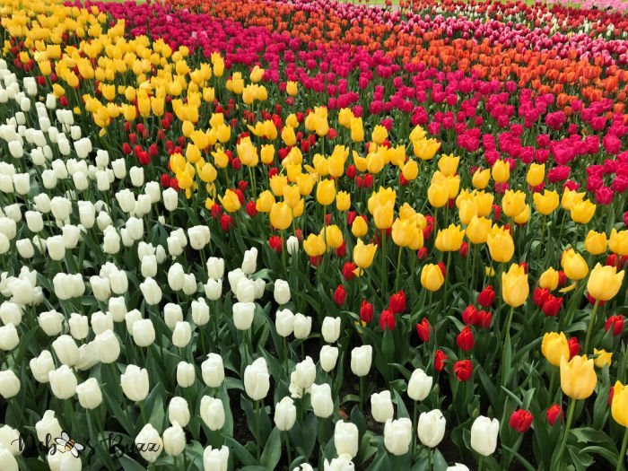
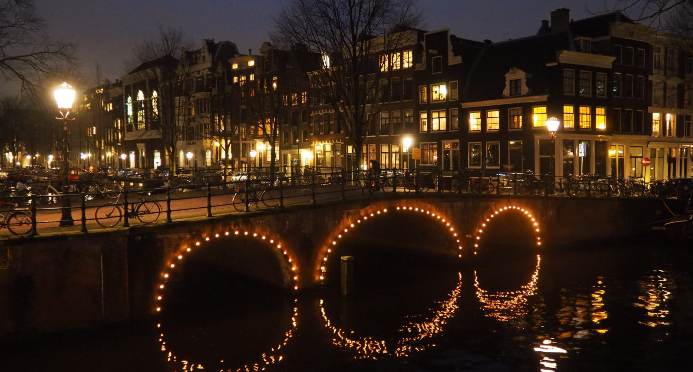
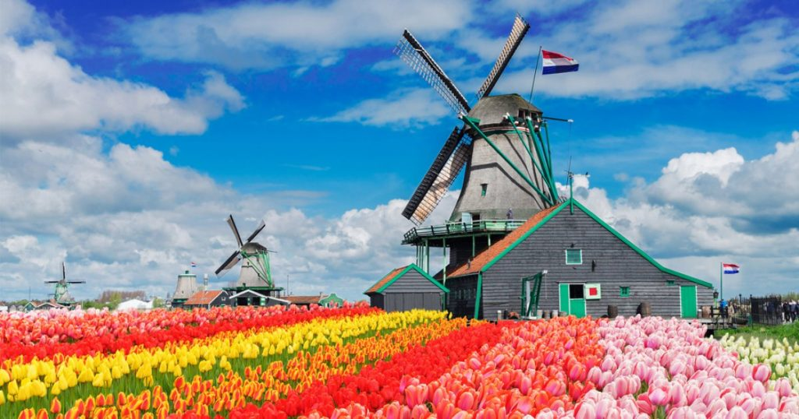
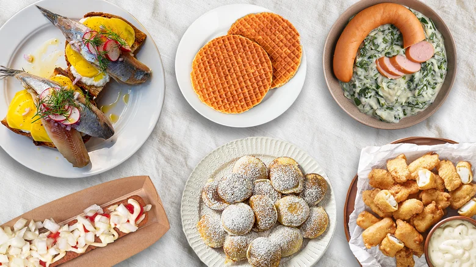

The Netherlands captivates me with its picturesque canals, vibrant tulip fields, rich artistic heritage, and progressive culture. From cycling through Amsterdam's charming streets to admiring masterpieces by Van Gogh and Rembrandt, the Netherlands offers a unique European experience filled with beauty, history, and innovation.
Why Netherlands?
- Tulip Fields: Witnessing the breathtaking sea of colorful tulips at Keukenhof Gardens in spring.
- Amsterdam Canals: Cruising through the UNESCO World Heritage canal ring and exploring the city's unique architecture.
- World-Class Museums: Visiting the Van Gogh Museum, Rijksmuseum, and Anne Frank House to dive deep into art and history.
- Cycling Culture: Experiencing life like a local by biking through cities and countryside on endless bike paths.
- Windmills: Seeing the iconic Dutch windmills at Zaanse Schans and Kinderdijk.
- Dutch Cuisine: Trying stroopwafels, bitterballen, herring, and authentic Dutch cheese.
What I Want to See & Experience

Colorful Tulip Fields

Amsterdam's Iconic Canals

Traditional Dutch Windmills

Van Gogh Museum, Amsterdam

Cycling Through the City

Delicious Dutch Treats